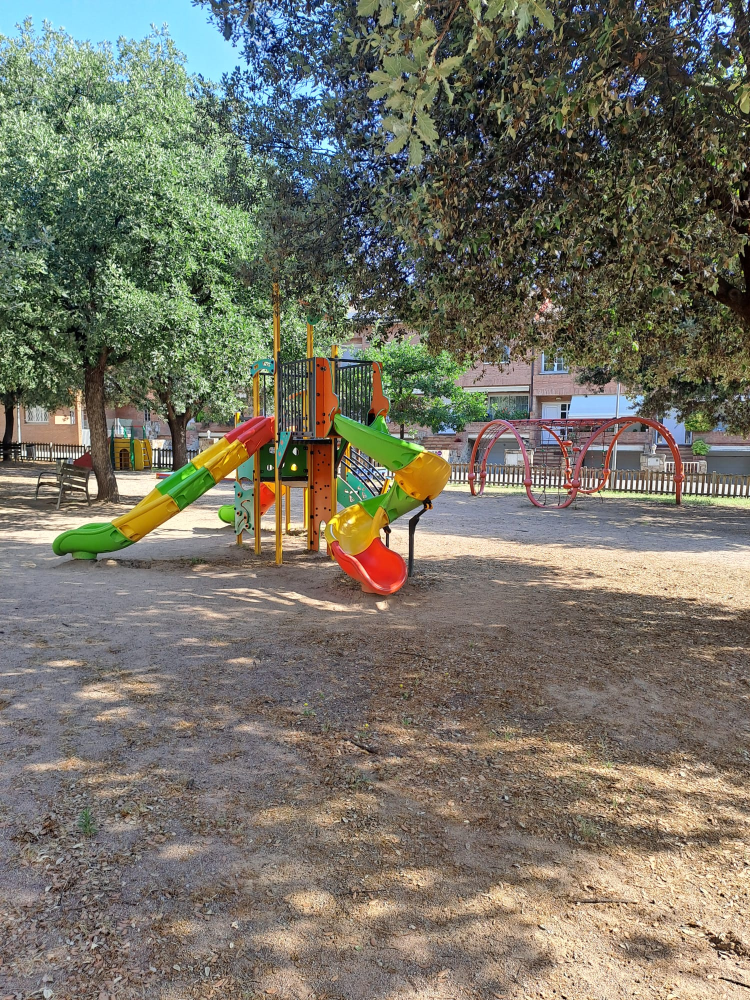
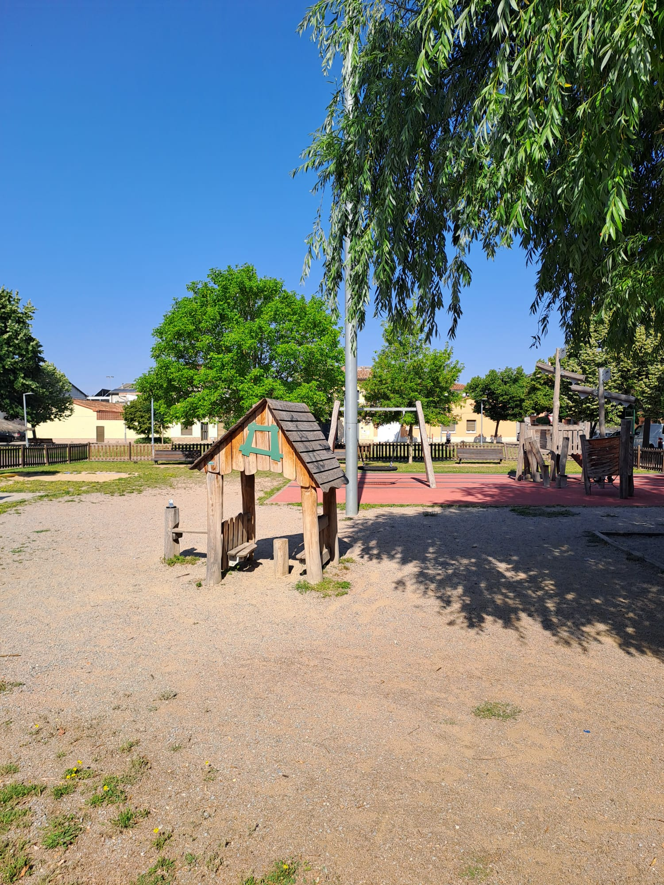
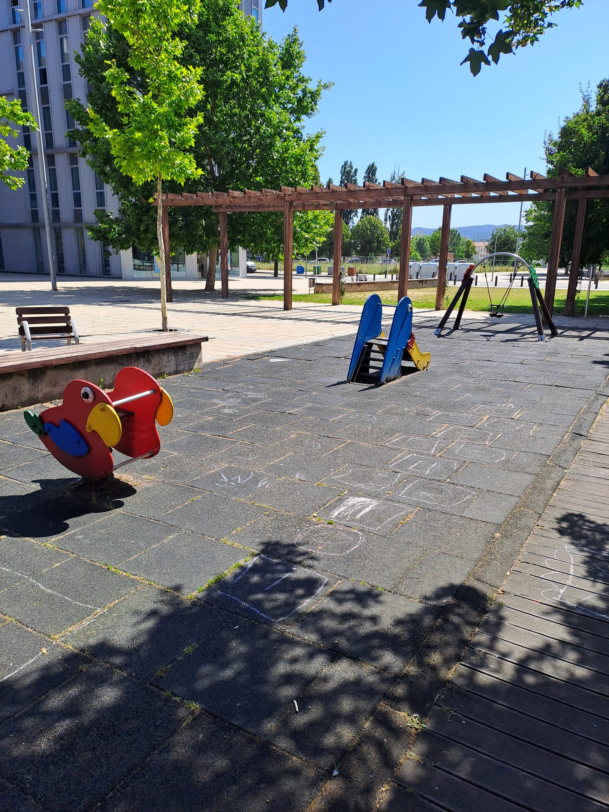
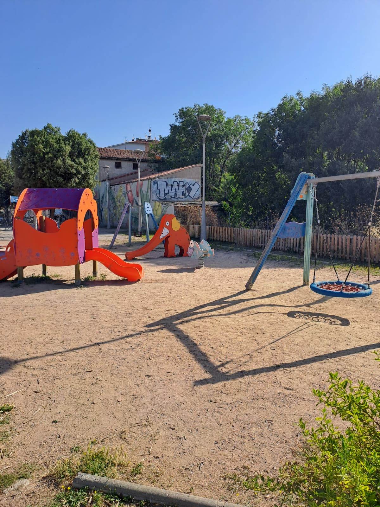
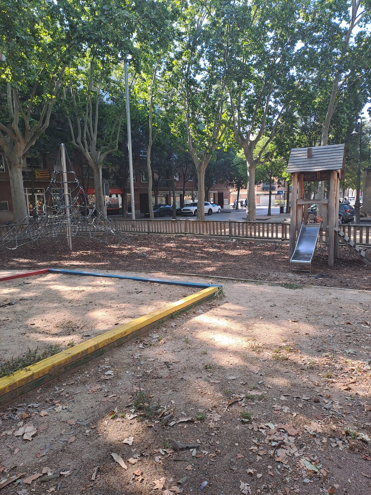
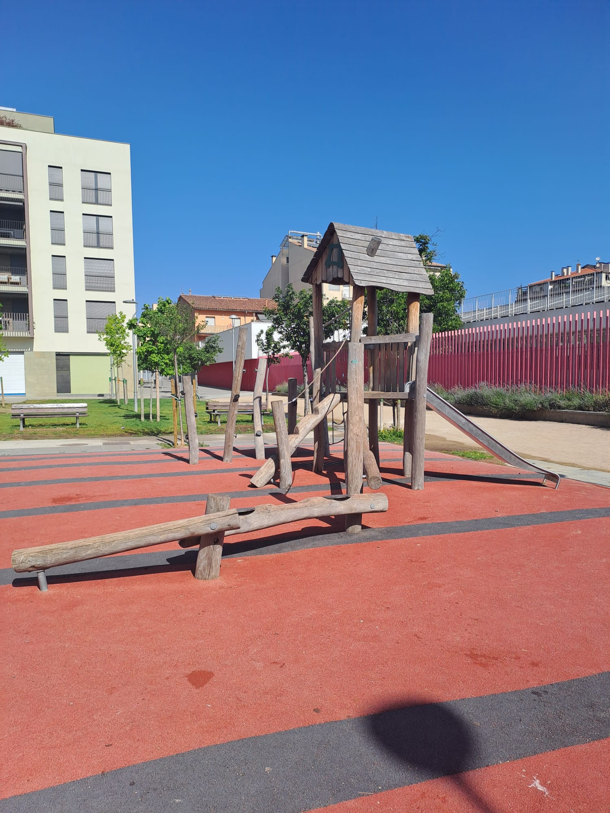
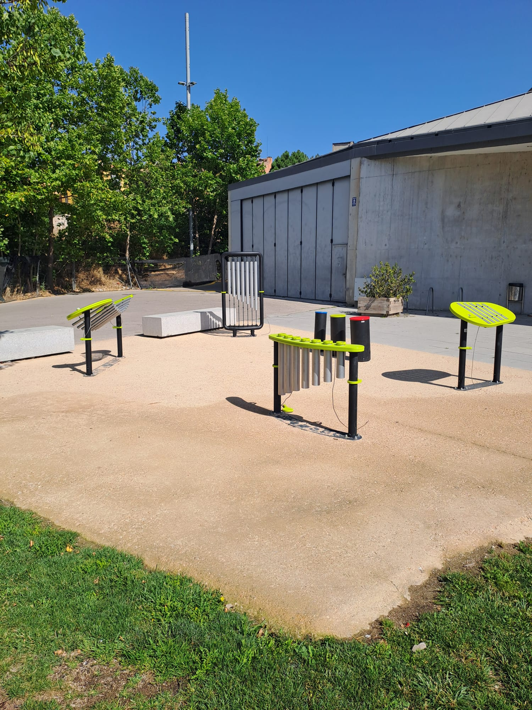
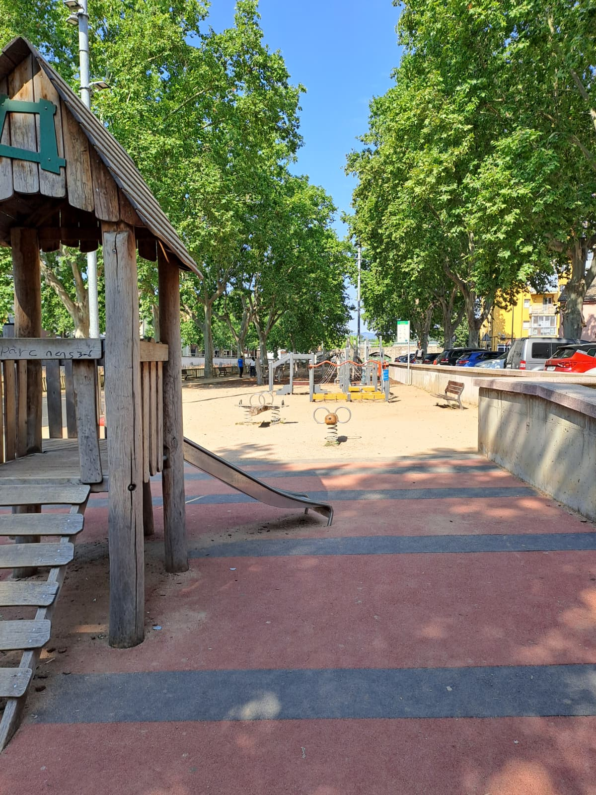

Hola!
Aquí tens un recull dels parcs de Vic i com són realment.
Hi ha dies que necessites un parc amb ombra o amb espai per córrer.
Aquesta pàgina t'ajuda a decidir quin triar avui.

Parc de Sant Jaume (Santa Anna)

Parc de la Rambla del Mèder

Parc de la Sínia

Parc de la Divina Pastora

Parc de Somoto

Parc Musical de l'Atlàntida
